Creating VM's using VirtualBox
In this tutorial, I will explain the setup of a HDP cluster from scratch on CentOS 7.0 using VirtualBox.
In this Article, we will create a hadoop cluster with a single namenode and datanode. The learnings can be extended for 'n' number of nodes. For this tutorial, we will assume that VirtualBox is already installed on the Windows 10 system and we have CentOS 7.0 image downloaded and available.
Step 1: Start the VirtualBox program and click on the new button just below the File menu. 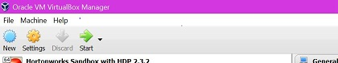Step 2: Type the name for your virtual machine. Select Linux and Red Hat for Type and Version respectively and click Next.
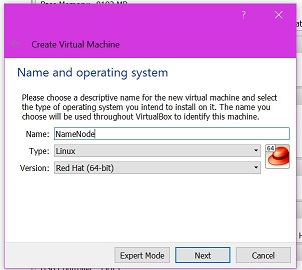Step 3: Select the amount of RAM you want to dedicate to this VM. For the namenode, dedicate atleast 4GB (more if you have sufficient RAM in your machine) and 2GB for the datanode.
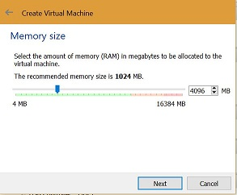Step 4: Next, you have to add a virtual hard disk with Create a virtual hard disk now option.
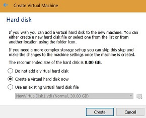Step 5: Select VDI(VirtualBox Disk Image) option for the hard disk file type if you will open this VM using only VirtualBox.
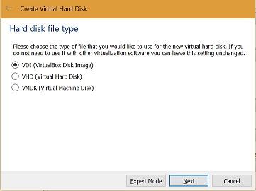Step 6: Select the Dynamically allocated option for the storage type on Physical disk. This option means that the physical space allocated will be assigned to the VM as and when needed. Then select the physical space for the nodes.
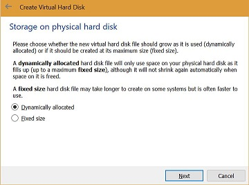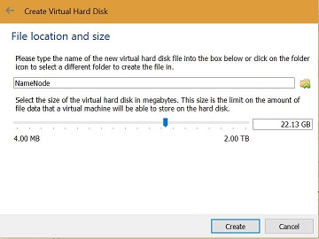Step 7: After the above step , we should have a powered off VM on the virtual box window.
Step 8: Before we fire up the VM, we need to add a Host-only network adapter for the VM. Select the VM and then click on the settings and navigate to the network tab and Adapter 2.
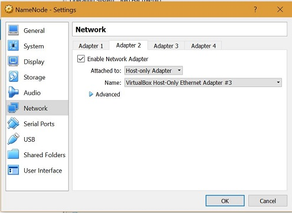If you do not have a virtual host adapter, the same can be added from File > Preferences > Network > Host-only Networks and then clicking on the add new host-only network. This will create a host network on the windows system which will be used for deciding the host ip for the VM.
Run cmd to open the windows command prompt and then execute the ipconfig command to get the host network for our VM's.
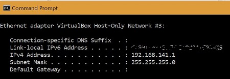Next, in the settings, select the downloaded iso in the storage menu as shown below.
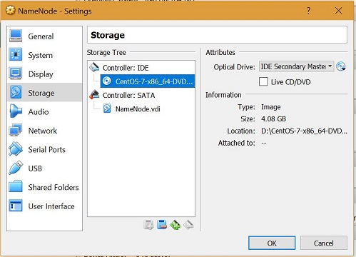VirtualBox will start the installation using the iso and you will be prompted to select an install mode. You can select Install CentOS 7. The default is to Test this media & install CentOS 7.
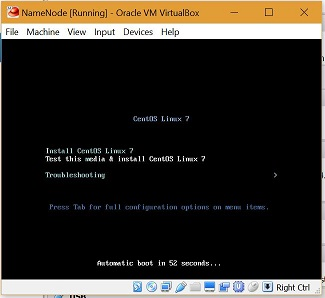Select the option Install CentOS Linux 7 and hit enter. It will take time to load the packages, and you will see the opening screen of the server. It requires the basic information to set up the server, for example:
- Time zone
- Keyboard layout
- Language support
- Installation source
- Software selection
- Installation destination
From the first opening screen, select the language that you would like to use during the installation process; for example, English (United States). Select the desired software selection option; for example, if you want to create an infrastructure server to run the complete network operation, select this option to get all the required packages installed. Similarly, it goes to the other option as well. Select the server with GUI to get the server installed with the graphical interface option. Click done, it will check the software dependencies, and you will see the confirmation in a couple of seconds. Click on the installation destination, and select the newly created disk space. In the network and hostname setting, enable the network. Begin the installation.
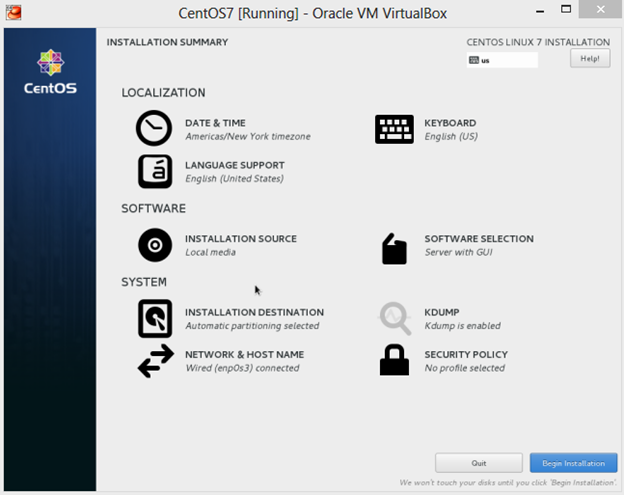In the next screen, you will be asked to set up the root password. Select a strong root password and create your user.
Next step is to get the environment ready for hadoop installation using ambari